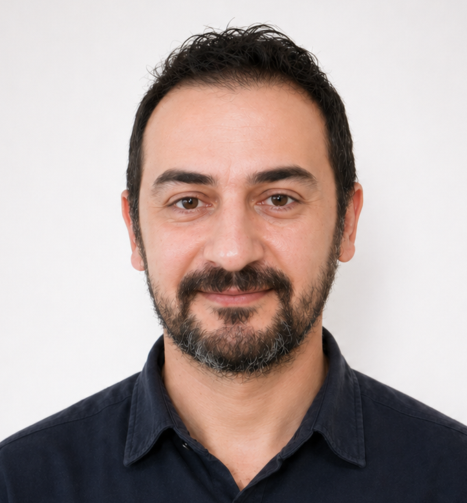

AI Evaluation
LLM response assessment, RLHF workflows, human preference ranking, instruction-following evaluation and annotation quality.
- Prompt evaluation
- Response rating
- Hallucination detection
AI Language Specialist • LLM Evaluation • Red Teaming
I combine 15+ years of experience in higher education, translation, localization and language technologies with hands-on AI training, quality assurance and red teaming practice.

I help teams evaluate, improve and localize AI-generated language. My background allows me to diagnose not only whether an output is wrong, but why it fails: instruction following, factuality, tone, ambiguity, safety, fluency, cultural fit or guideline alignment.
LLM response assessment, RLHF workflows, human preference ranking, instruction-following evaluation and annotation quality.
Adversarial testing of model behavior with attention to safety, policy compliance, edge cases and risk-sensitive outputs.
English–Turkish translation, localization, proofreading, transcription, subtitling, terminology and linguistic QA.
University-level teaching, curriculum design, assessment systems, educational leadership and research-informed evaluation.
From translation and academic leadership to AI training and linguistic quality assurance.
Worked on AI training and evaluation tasks including response assessment, red teaming, guideline compliance, quality review and human feedback workflows.
Academic administration, curriculum planning, assessment coordination, institutional quality assurance and program development.
University-level language instruction, assessment, curriculum implementation and student learning support.
Freelance language projects involving translation, localization, transcription, proofreading, subtitling and data-related linguistic work.
Taught translation, grammar, lexical competence and ELT-related courses while contributing to academic coordination and administration.
Identifying fluent but factually unreliable outputs and tracing the source of the error through prompt interpretation and response structure.
Testing whether a model follows complex, layered and constraint-heavy instructions across realistic user scenarios.
Exploring edge cases, policy-sensitive prompts and adversarial inputs to help models behave more safely and consistently.
Assessing English–Turkish outputs for meaning, tone, fluency, cultural fit, terminology and task alignment.
Freelance and project-based work in annotation, translation, transcription, proofreading and linguistic QA.
Phonetic transcription projects for speech recognition and navigation technologies, including Nuance and Yandex-related projects.
Technical officer and managing editor experience for international academic journals and digital publishing workflows.
Available for AI evaluation, red teaming, localization, English–Turkish language QA, translation and academic language projects.